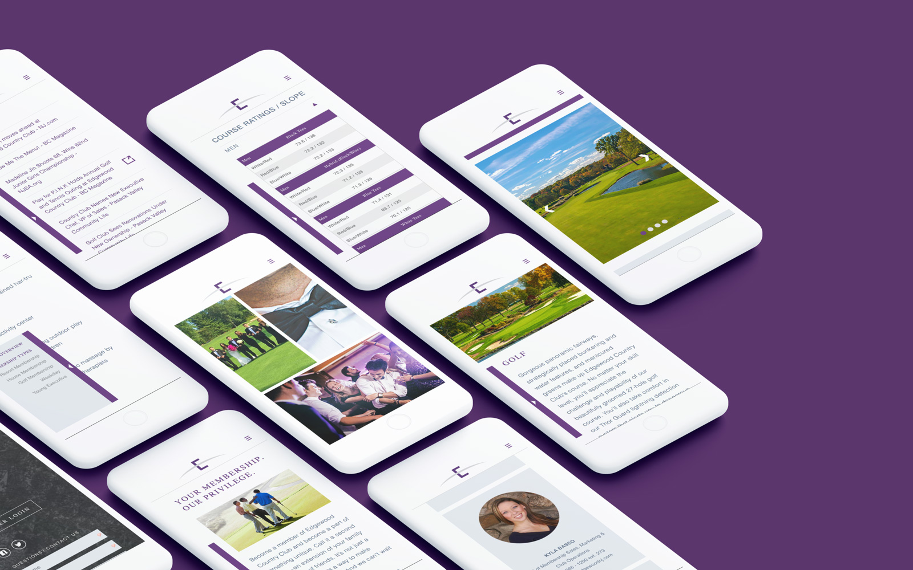

Hello,
I'm a full-stack developer focused on front-end mobile design. My approach advocates Design Thinking and User Experience methods to build the best digital products possible.
Recent Projects
Here are some cool web apps I've worked on.
-
- Bold Maker Studio
- Product design company in Haverhill, MA. While migrating from WooCommerce to Shopify, we rebranded and redesigned the site from the bottom up.
- Hats: UX Designer, Photographer, Developer
- Tools:Lightroom, Photoshop, Illustrator, Shopify
-

- Long Wharf Capital
- Real estate investment firm in Boston, MA. I developed a unique WordPress theme with custom post types for the staff and investment portfolio.
- Hats: Mobile UI Designer, Full-Stack Developer
- Tools:HTML, Gulp, SASS, Wordpress, Timber
-

- Edgewood Country Club
- An inclusive club, golf course, and wedding/event venue in Edgewood. I developed the front-end framework and helped design the user interface.
- Hats: Mobile UI Designer, Full-Stack Developer
- Tools: HTML, Gulp, SASS, JS, Nunjucks
-

- The Renew Collaborative
- Now in testing, this online resource will be used by nonprofits nationwide to implement HomeStart's proven eviction-prevention strategy.
- Hats: Mobile UI Designer, Front-End Developer
- Tools: HTML, Gulp, SASS, JS, Nunjucks
-

- Give Play For Good
- The landing page for Greensboro Childrens Museum's media campaign, Give Play For Good. I built the page and created the logo animation used in TV commercial and digital ads.
- Hats: Mobile UI Designer, Full-Stack Developer, Motion Designer
- Tools: Wireframe, HTML, SASS, JS, Premiere Pro
-

- HomeStart
- A nonprofit seeking to eliminate homelessness in Boston. I was honored to be UX designer, reorganize and redesign the site visually before moving on to development.
- Hats: UX & UI Designer, Front-End Developer
- Tools: Wireframe, HTML, CSS, WordPress, Photoshop
Past Experience
-
2002 - 2006
Yearly computer science and programming courses shaped my future. My first interactive design applications date back to 2003 when Flash was all the rage. -
2007 - 2011
I got started as a freelance designer and web developer in 2007, networking and learning more new skills in the field year after year. -
2012
For the Summer I was an ID Tech Camps instructor of Photography and Web Development courses to kids and teens on the MIT campus in Cambridge, MA. -
2013 - Today
I've been employed as a web developer at Primary since April 2013, and was promoted to web department manager in 2015. -
2016
In 2016 I won a bronze Hatch Award for the landing page design of Martha's Vineyard Dressing Company. 2017
Gradually I pivoted from Web manager to focus on User Experience, and increase the value of our agency's digital products.
Dev Skills
HTML5
I enjoy coding with semantic HTML5 — it's more meaningful to my fellow developers and better-suited for modern devices, browsers and search engines.
SASS
Who knew styling could be so much fun? Not only does SASS make my days coding easier, it's helped me improve as a front-end developer.
Mobile
Always mobile-first, BrowserStack and device testing assist in my development workflow. When I'm crafting web components and design systems, no screen size goes overlooked.
GIT & Github
I've pushed over 300 commits to GitHub in the past year. I know my way around Terminal, GitHub.com and Git to collaborate with a team of developers.
GULP
Gulp has saved countless hours from my development workflow. They can be used to live-refresh, prefix, preprocess, concatenate, minify, template, theme, and more.
Design Skills
User Experience
Learning and applying UXD has transformed my web design workflow. With proper planning, research and testing, both business and user objectives can coexist, and both succeed.
User Interface
A good UI begins with competitive research and plenty of sketching. Understand the problem and let usability testing solve the rest. Last but not least, apply strong visual design.
Responsive / Web
The first iPhone released around when I began learning web design. For myself like many designers, adapting to the constraints of mobile was a major turning point.
Graphic
While majoring in Visual Communications I gained a deeper understanding of graphic design and its principles. I'm still learning and use Adobe CC's design apps on a weekly basis.
Motion
Since drawing flipbooks as a kid I've always dabbled in animation. Today my motion design chops apply to projects in Adobe Animate, Premiere Pro, CSS3 and JavaScript.